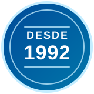

Doppler venoso
Miembros inferiores o superiores, según la extremidad y la lateralidad indicadas.


El Doppler permite observar el movimiento de la sangre dentro de los vasos mediante ultrasonido. La orden debe indicar si se necesita evaluar venas, arterias o una región específica: no todos los estudios Doppler responden a la misma pregunta.
Venoso y arterial son estudios diferentes. Indicar únicamente “Doppler” no siempre basta para asignar la cita adecuada.
Miembros inferiores o superiores, según la extremidad y la lateralidad indicadas.
Miembros inferiores o superiores; se coordina de acuerdo con los vasos que solicita el médico.
Vasos del cuello, vasos abdominales y pélvicos, arterias renales o sistema portal: envíenos la orden para confirmar el protocolo.
La preparación depende de la región. Un Doppler de extremidades y uno de vasos abdominales pueden requerir indicaciones distintas. Confirme las instrucciones al reservar.
Escríbanos a LABCCO con el nombre del estudio o una foto legible de la orden.
Revisamos disponibilidad, alcance, preparación, cotización y horario antes de agendar.
La realización es con nuestro aliado especializado. LABCCO le confirma dirección y cita.
Entrega el mismo día o máximo el siguiente día hábil, según el estudio y lo confirmado al agendar.
Utiliza ondas sonoras, no rayos X. La elección del territorio vascular depende de la indicación médica.
Sí. Los estudios de imágenes se coordinan antes de asistir. Escríbanos a LABCCO para revisar disponibilidad y preparación.
Solicite una cotización por WhatsApp. La región, lateralidad, proyecciones o uso de contraste pueden cambiar el alcance; confirmamos el valor del estudio que necesita.
Se realiza con nuestro aliado especializado en Rionegro. LABCCO coordina su cita y le confirma la ubicación antes de asistir.
Entrega el mismo día o máximo el siguiente día hábil, según el estudio y lo confirmado al agendar.
No prestamos servicios los domingos. Consulte las opciones de cita disponibles durante la semana y los sábados.
Envíenos su orden y le ayudamos a confirmar el estudio, la preparación y la cita. Atención cercana para pacientes de Rionegro y el Oriente Antioqueño.
Cotizar y coordinar mi citaCra. 48 #52-54, Edificio Santa Bárbara, Local 102, Rionegro. Lun–vie: 7 a.m.–12 m. y 2–5 p.m. Sábados: 8–11 a.m. Sin atención los domingos.
La realización se coordina con un aliado especializado en Rionegro. Le confirmamos el lugar, la hora y las instrucciones de su estudio antes de asistir.
Información educativa sobre el estudio: MedlinePlus. La preparación y el protocolo de su cita los confirma el centro de imágenes.